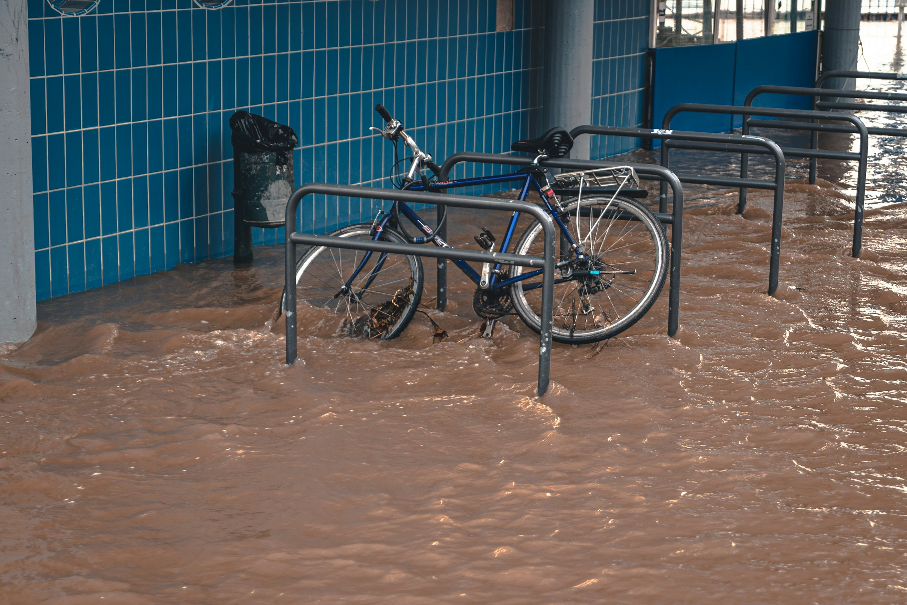
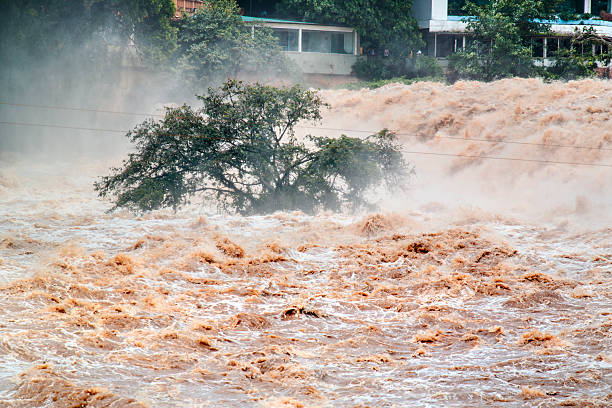
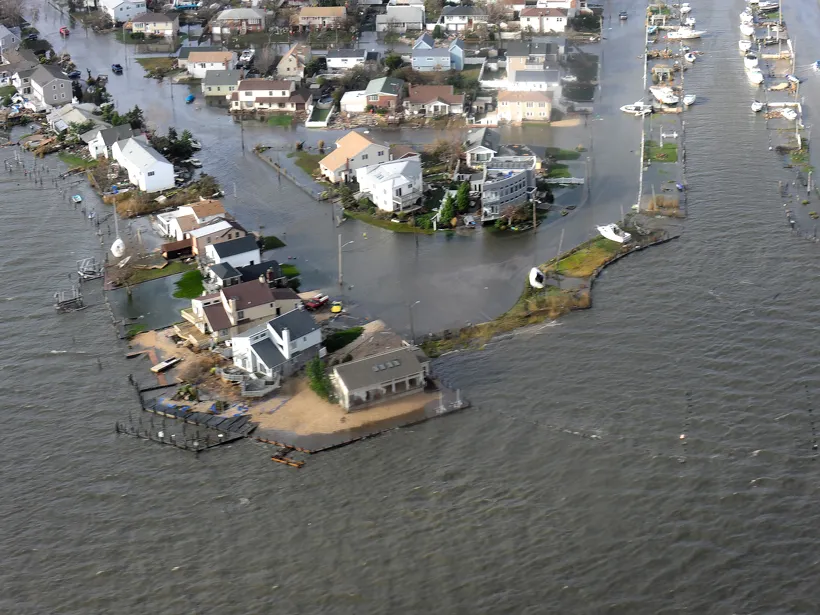
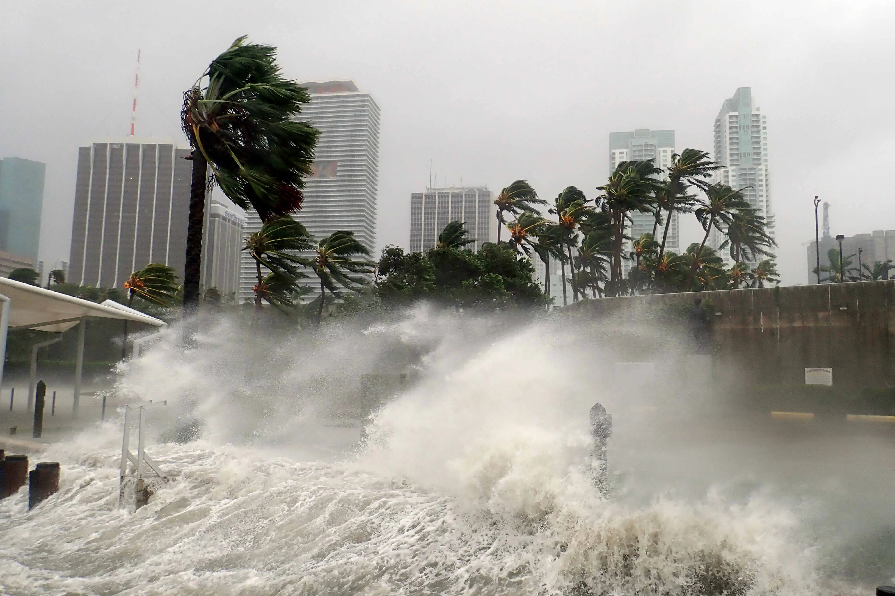
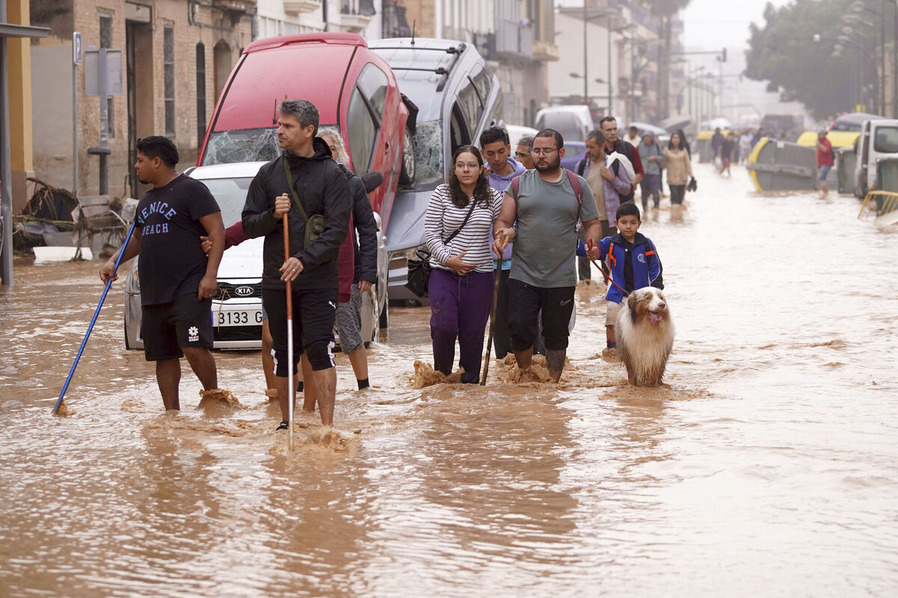
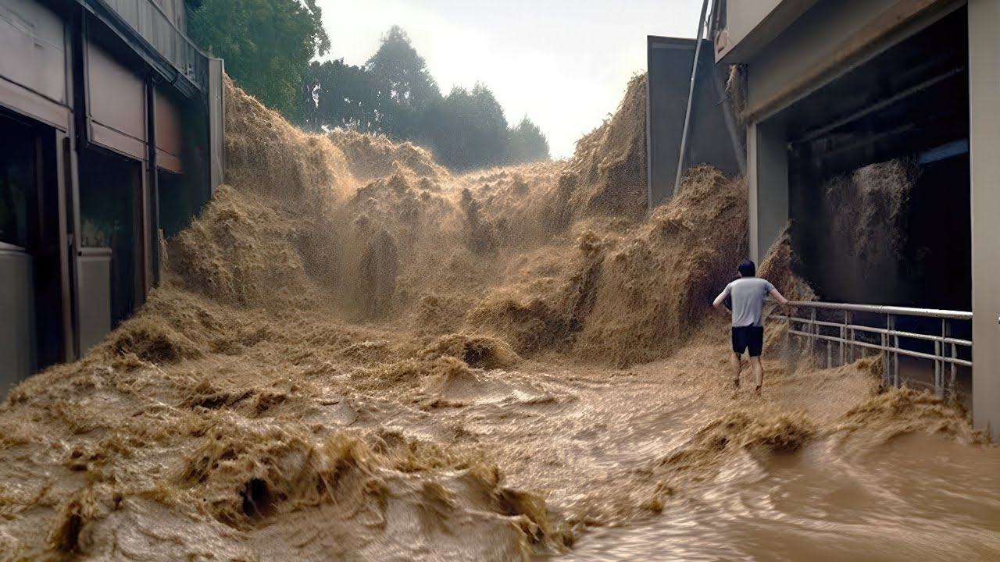
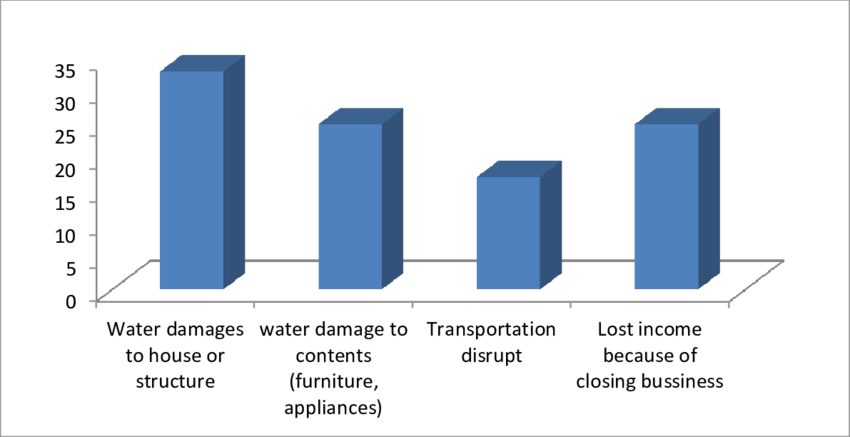
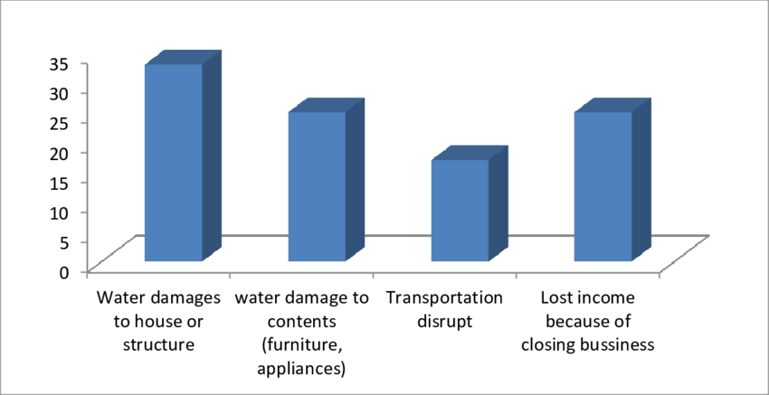
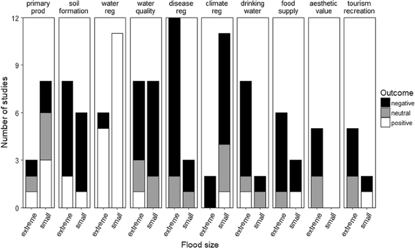

Home
What is Flood?
Flooding is an overflowing of water onto land that is normally dry. Floods can happen during heavy rains, when ocean waves come on shore, when snow melts quickly, or when dams or levees break. Damaging flooding may happen with only a few inches of water, or it may cover a house to the rooftop. Floods can occur within minutes or over a long period, and may last days, weeks, or longer. Floods are the most common and widespread of all weather-related natural disasters.

Flash floods are the most dangerous kind of floods, because they combine the destructive power of a flood with incredible speed. Flash floods occur when heavy rainfall exceeds the ability of the ground to absorb it. They also occur when water fills normally dry creeks or streams or enough water accumulates for streams to overtop their banks, causing rapid rises of water in a short amount of time. They can happen within minutes of the causative rainfall, limiting the time available to warn and protect the public.
Types of Flood
- River Flood: A river flood occurs when water levels rise over the top of river banks due to excessive rain from tropical systems making landfall, persistent thunderstorms over the same area for extended periods of time, combined rainfall and snowmelt, or an ice jam

- Coastal Flood: A coastal flood, or the inundation of land areas along the coast, is caused by higher than average high tide and worsened by heavy rainfall and onshore winds (i.e., wind blowing landward from the ocean).

- Storm Surge: Storm surge is an abnormal rise in water level in coastal areas, over and above the regular astronomical tide, caused by forces generated from a severe storm's wind, waves, and low atmospheric pressure. Storm surge is extremely dangerous, because it is capable of flooding large coastal areas. Extreme flooding can occur in coastal areas particularly when storm surge coincides with normal high tide, resulting in storm tides reaching up to 20 feet or more in some cases. Along the coast, storm surge is often the greatest threat to life and property from a hurricane. In the past, large death tolls have resulted from the rise of the ocean associated with many of the major hurricanes that have made landfall.

- Inline Flooding: Inland flooding occurs when moderate precipitation accumulates over several days, intense precipitation falls over a short period, or a river overflows because of an ice or debris jam or dam or levee failure.

- Flash Flood: A flash flood is caused by heavy or excessive rainfall in a short period of time, generally less than six hours. Flash floods are usually characterized by raging torrents after heavy rains that rip through river beds, urban streets, or mountain canyons. They can occur within minutes or a few hours of excessive rainfall. They can also occur even if no rain has fallen, for instance after a levee or dam has failed, or after a sudden release of water by a debris or ice jam.

Why flood awareness is necessary?
Flood awareness is crucial because it empowers communities to prepare for one of the most devastating natural disasters, saving lives, protecting property, and preserving critical resources. Floods can occur suddenly and with little warning, particularly with climate change accelerating the frequency and intensity of extreme weather events. Without adequate awareness, communities are left vulnerable to the destruction of homes, infrastructure, and livelihoods, often facing long-term economic and social setbacks. Effective flood awareness educates individuals about the risks specific to their region, providing essential information on how to respond swiftly and effectively. It also enables local governments and organizations to develop more resilient infrastructure, adopt early warning systems, and implement proactive evacuation and emergency response plans. By fostering a culture of preparedness, flood awareness ensures that people understand not just the risks but also the actions they can take to minimize harm, protect vulnerable populations, and ensure faster recovery in the aftermath. Ultimately, investing in flood awareness is an investment in community resilience, safety, and sustainable development, making it an essential pillar of disaster management in our increasingly volatile climate.
Causes of Flood
Floods occur when water overflows or inundates normally dry land, often causing significant damage to property, ecosystems, and sometimes leading to loss of life. Floods can be caused by a variety of natural and human-induced factors. Here’s a comprehensive look at the causes of floods:
- Heavy Rain:
- Intense or Prolonged Rainfall: One of the primary causes of flooding is intense or continuous rainfall. When the amount of rain exceeds the soil's absorption capacity and drainage system, water accumulates on the surface, leading to floods.
- Monsoons and Tropical Storms: In tropical regions, seasonal monsoons bring massive amounts of rainfall over a few months, and when combined with poor drainage or overwhelmed rivers, they lead to widespread flooding.
- Rain-on-Snow Events: In colder regions, heavy rain can fall on existing snowpacks. The combination of rain and rapidly melting snow can cause a sudden rise in water levels in rivers and streams, resulting in flooding.
- River Overflow:
- Riverine Floods: River floods occur when rivers overflow their banks. This can be due to prolonged heavy rainfall upstream, rapid snowmelt, or ice jams that block water flow.
- Flash Floods: These are sudden, intense floods caused by heavy rain over a short period. Flash floods are common in hilly or mountainous areas where water runs off steep slopes rapidly, overwhelming river channels.
- Ice Jams: In colder regions, ice chunks from frozen rivers may break and pile up downstream, creating a natural dam. This causes water to back up and eventually spill over, resulting in floods.
- Snowmelt: In spring, warming temperatures cause accumulated snow to melt. If snowmelt is rapid, the resulting runoff can lead to river flooding, especially when combined with saturated soil and rainfall. Mountainous regions and areas with significant snowfall are especially vulnerable to snowmelt-induced flooding.
- Storm Surges and Coastal Flooding
- Hurricanes and Tropical Storms: These storms produce powerful winds that push seawater onto coastal areas, creating a storm surge. The rise in sea level, combined with rainfall, can lead to extensive flooding along coastal regions.
- Cyclones and Typhoons: Similar to hurricanes, these storms bring strong winds, heavy rainfall, and storm surges, leading to widespread flooding in coastal and low-lying areas.
- Tsunamis: Earthquakes or volcanic eruptions under the sea can trigger tsunamis, which are massive waves that rush inland, inundating coastal areas and causing devastating flooding.
- Poor Drainage and Urbanization
- Urbanization and Impervious Surfaces: As cities grow, they often replace natural land with impervious surfaces such as concrete, asphalt, and buildings. This prevents water from seeping into the ground, increasing surface runoff and overwhelming drainage systems.
- Inadequate Drainage Infrastructure: Poorly designed or inadequate drainage systems are common in rapidly growing urban areas, where infrastructure development may not keep pace with population growth. This can lead to frequent urban flooding, even with moderate rainfall
- Dam Failure and Infrastructure Issues:
- Dam and Levee Breach: If a dam or levee breaks, it releases a massive volume of water downstream, flooding nearby areas. Dams may fail due to poor maintenance, natural disasters, or structural weaknesses.
- Aging Infrastructure: Many older cities have infrastructure that wasn’t built to handle the current levels of urbanization or climate-induced rainfall. Deteriorating dams, levees, and drainage systems can contribute to floods.
- Deforestation and Land Degradation
- Loss of Vegetation: Trees and vegetation help absorb rainwater and reduce runoff. Deforestation for agriculture, logging, or urban development reduces the land's natural capacity to absorb water, leading to increased surface runoff and higher flood risk.
- Soil Erosion and Degradation: Deforestation also contributes to soil erosion, reducing the soil's ability to hold water. Land degradation, especially in agricultural areas, can lead to hardened, less absorbent soil, making it easier for floods to occur.
- Climate Change
- More Intense Rainfall: Climate change has led to an increase in the frequency and intensity of extreme weather events, including heavy rainfall. As the atmosphere warms, it holds more moisture, leading to heavier rainfall and increased flood risk.
- Rising Sea Levels: Melting glaciers and ice caps due to global warming contribute to rising sea levels, which increase the risk of coastal flooding and make storm surges more dangerous.
- Shifts in Seasonal Patterns: Changes in seasonal weather patterns can lead to wetter-than-usual seasons, unpredictable monsoons, and intensified cyclones, all of which increase flood frequency.
- Natural Blockages and Landslides
- Landslides: In mountainous areas, landslides can block rivers, creating a natural dam. This can lead to upstream flooding and, eventually, a sudden release of water when the natural dam gives way.
- Debris Blockages: Heavy rains and high winds can cause debris such as fallen trees, sediment, and rocks to clog river channels and drainage systems, leading to localized flooding.
- Glacial Lake Outburst Floods (GLOFs) In mountainous regions, melting glaciers can form lakes that are often contained by natural barriers. If these barriers fail due to erosion or pressure from rising water, the lake can burst, releasing large volumes of water downstream and causing flash floods in nearby areas.
- Human-Induced Changes to River Courses
- River Diversions and Canal Constructions: Altering natural river courses or building canals for irrigation, navigation, or hydropower projects can increase flood risks by disrupting natural flow patterns.
- Sand Mining and Riverbed Erosion: Excessive sand mining can lower riverbeds, destabilize riverbanks, and increase the likelihood of floods, especially during heavy rainfall.
- Soil Saturation from Previous Rainfall
Saturated Ground: When soil has absorbed as much water as it can from previous rains, any additional rainfall will run off the surface, increasing the likelihood of floods. Areas experiencing continuous rain or recent rain events are especially vulnerable to this.
Effects of Flood
Floods, one of the most common natural disasters globally, have significant and often devastating effects on both human populations and the environment. These impacts vary depending on flood intensity, duration, geographic location, and the preparedness of affected communities. Here, we’ll explore these impacts under two primary categories: Human Impact and Environmental Impact.
- Human Impact: Floods can be catastrophic for human societies, affecting lives, health, property, and economies.
- Loss of Life and Displacement: Floods often lead to loss of life, as rising waters can catch people unprepared. People in low-lying or densely populated areas, particularly near rivers and coasts, are at high risk. When floods occur unexpectedly, they force mass evacuations, displacing thousands or even millions of people. Displacement can lead to prolonged homelessness and create long-term challenges for rebuilding lives and communities
- Health and Sanitation Issues: Floodwaters frequently mix with sewage and chemicals, leading to severe health risks. Standing water becomes a breeding ground for mosquitoes, increasing the likelihood of diseases like malaria and dengue fever. Contaminated water can lead to outbreaks of waterborne diseases such as cholera, typhoid, and dysentery, especially in areas with limited access to clean drinking water. Mental health issues, including anxiety, depression, and PTSD, are common among flood survivors.
- Economic Losses: Flooding incurs substantial economic costs, impacting agriculture, infrastructure, and local economies. Crops and livestock can be destroyed, leading to food shortages and loss of income for farmers. Buildings, roads, and bridges are often damaged or destroyed, disrupting transportation and trade. This loss of infrastructure affects the overall economy, as businesses close and repair costs rise. For many affected by floods, the economic burden continues well beyond the event itself.
-
Impact on Education and Services: Floods disrupt essential services such as education and healthcare. Schools are often used as evacuation centers or are severely damaged, interrupting education for extended periods. Healthcare facilities may be overwhelmed or inaccessible due to flooding, reducing medical care options when they are needed most. This disruption can have long-lasting effects on communities, particularly in impoverished or rural areas with limited resources.
 

- Environmental Impact The environmental impact of flooding is multifaceted, influencing ecosystems in both positive and negative ways.
- Soil Erosion and Degradation: Floodwaters can erode riverbanks and wash away nutrient-rich topsoil, affecting land fertility. This erosion destabilizes habitats, particularly for plant and animal species that depend on specific soil conditions. In severe cases, soil degradation can transform fertile areas into barren land, making it challenging for native vegetation to recover.
-
Water Pollution: Floods often spread pollutants such as chemicals, pesticides, and waste into rivers, lakes, and oceans. This contamination affects drinking water sources and harms aquatic ecosystems. Floods that carry industrial waste or hazardous chemicals pose a serious threat to wildlife and can lead to long-term ecological damage if toxic substances accumulate in the food chain.
- Impact on Biodiversity: Flooding can displace or kill wildlife, particularly species that cannot move to higher ground or adapt to sudden changes in their habitat. Aquatic species might experience short-term population boosts due to expanded habitats, but terrestrial species are often negatively affected. However, some ecosystems depend on periodic flooding for regeneration and nutrient cycling. Floodplains, for example, benefit from floods as they replenish soil nutrients, supporting diverse plant and animal life.
- Altered Ecosystem Dynamics: Floods can change the dynamics of ecosystems by creating new waterways, lakes, or marshes, which can benefit some species while harming others. Freshwater flooding in coastal areas can disrupt saltwater ecosystems, affecting species that thrive in saline conditions. Conversely, certain flood-prone regions, such as the Nile Delta, rely on seasonal flooding to maintain rich agricultural conditions, demonstrating that the environmental impact of floods can also be beneficial under specific circumstances.
